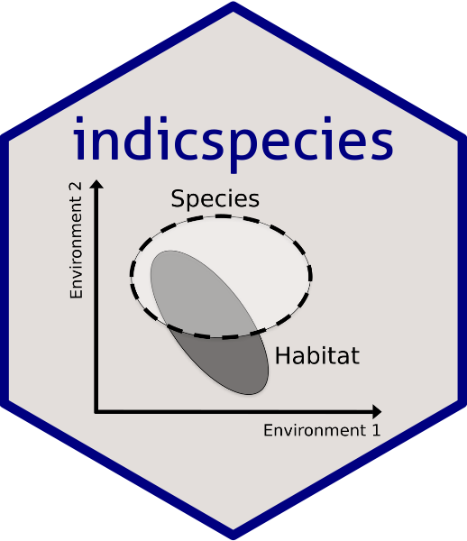

Changelog
Source:NEWS.md
Version 1.7.14
CRAN release: 2023-07-20
- Bug correction in pruneindicators and print.indicators
- Bug correction in nichecentroid and plotniche for distance matrix with equal resources
- Translation of documentation to Roxygen
Version 1.7.11
CRAN release: 2022-03-04
- Code modification in ‘multipatt’ to avoid large matrix multiplication
Version 1.7.10
- Bug correction in ‘multipatt’ for single-valued restcomb
- Vignettes rewritten in Rmarkdown
Version 1.7.9
CRAN release: 2020-02-04
- Improvements in ‘multipatt’, ‘signassoc’ and ‘indicators’ functions to accept custom permutation designs, by Noah Dell.
Version 1.7.8
CRAN release: 2019-11-05
- New algorithm for ‘combinespecies’, similar to the one used for ‘indicators’
- New option ‘min.order’ in function ‘combinespecies’
- Permutation tests are now available in function ‘indicators’
- Options ‘nboot’ and ‘alpha’ of functions ‘strassoc’ and ‘indicators’ renamed to ‘nboot.ci’ and ‘alpha.ci’